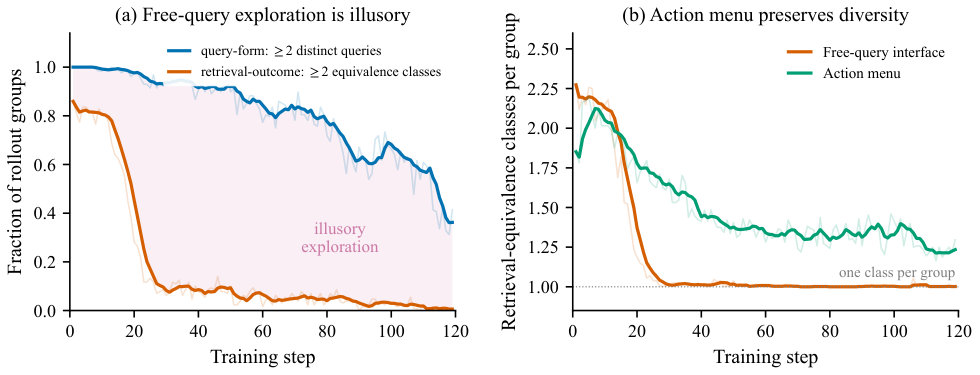
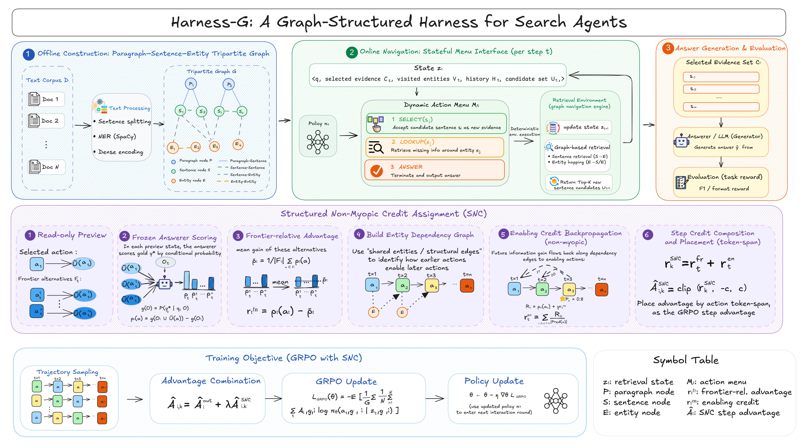

📦 3 Parts + Conclusion
👉 滑动
PART 01
问题诊断
检索坍缩
PART 02
方法核心
图 + SNC
PART 03
实验验证
F1 提升
PART ///
写在最后
接口即杠杆
核心主张 · Harness-G
自由查询制造假探索；图上菜单 + SNC 才能恢复有效检索对比。
近年 RL 搜索代理把检索写成自由格式自然语言查询，表面很热闹，但组内对比常常学不到东西。本文指出真正的病灶是retrieval-equivalence collapse——并给出从动作接口入手的修复方案。
01
PART
问题背景
BACKGROUND · 检索等价性坍缩
现有方法的局限
近年 RL 搜索代理（如 Search-R1）把检索表述为自由格式自然语言查询：策略直接生成查询字符串，再以最终答案回报优化整段多回合交互。
但训练中出现了量化得很清楚的病症：策略会生成大量表面不同的查询（高 query-form diversity），轨迹累积到的证据集合却高度重叠（低 retrieval-outcome diversity）。在 Search-R1 中，一开始约 86% 的 rollout 组跨越多个检索等价类，到训练步 30 时降到不到 10%——所谓「探索」多半只是语表层花样。
这直接伤害基于组比较的优化（如 GRPO），典型有两类：
消失的优势：不同轨迹检索到相同证据时，最终回报几乎一样，组内优势趋近于零，学不到有区分力的信号。
棘手的检索归因：检索结果相同但答案不同时，回报差更多来自下游推理噪声，把回报归因到检索动作会产生误导性梯度。
作者将这一现象命名为 retrieval-equivalence collapse（检索等价性坍缩）。它并非单纯靠更细粒度回报（process rewards、信息增益）就能修好——病灶在动作—环境接口的多对一映射：多个查询字符串映射到相同检索结果。

— 检索等价性坍缩示意：查询形式多样性高，检索结果多样性坍缩，产生虚假探索信号。
本文瞄准的缺口
缺口
现有工作多在奖励或信用分配层加密度，却很少追问策略看到的动作空间是否恰当——同一决策状态里，策略能否面对明确、可比较的可行替代项。自由生成查询带来语义别名，破坏组内对比学习的基础。
目标
把检索动作从自由文字生成重构为「有限、可验证且可预览」的离散选择（句子／实体／回答）——改接口而非只改奖励，恢复同状态下对比，并据此设计结构化非短视信用分配 SNC。
02
PART
贡献
CONTRIBUTIONS · 方法改进型
论文类型：方法改进型。核心贡献三条：
提出并量化 retrieval-equivalence collapse：对比 query-form diversity 与 retrieval-outcome diversity，展示自由查询如何制造虚假表面探索，削弱组相对优化；用累积证据重叠定义检索等价类，给出组跨类比例从 86% 降到 <10% 的实证。
设计 Harness-G：在程序化构建的段落—句子—实体图上做有限动作选择（Select／Lookup／Answer），由环境确定性构建查询与更新状态，消除字符串→检索的多对一别名。
提出 Structured Non-myopic Credit（SNC）：在 frontier 上用冻结答案评分器 g 做同态比较（frontier-relative credit），并沿 provenance edges 把下游增益回溯给早期使能动作（enablement credit）。
03
PART
方法
METHOD · Harness-G + SNC
核心思路
自由生成查询带来大量语言层噪声：轨迹看似分叉，检索结果却常重合。若每一步只能从当前状态的有限菜单里选一个显式项，不同选择就会更直接对应不同检索结果，组比较 RL 才能真正区分好坏动作。
显式菜单
减少语言别名，同一意图不再被不同字符串掩盖
可预览
选前评估替代项贡献，支持同态比较
确定性执行
去重保证响应一致，压低无关方差
方法细节
环境与图结构：
离线图
离线构建 段落—句子—实体图：节点对应段落、句子与抽取实体，边表示来源／引用／实体出现关系。
在线菜单
环境维护检索状态 s_t，据此构造去重、有界动作菜单 A_t。动作三类：Select（采纳证据句）、Lookup（跟踪实体展开证据）、Answer（终止并作答）。每条可返回只读 preview，供 SNC 评分。
策略与执行：策略 π_θ(a_t | s_t) 从有限集合采样；环境验证并确定性地执行（含重复过滤），返回下一状态与答案。如何构造检索查询交给环境，策略只做语义决策。
Structured Non-myopic Credit（SNC）：
冻结评分器 g
评估候选动作的潜在答案质量
Frontier credit
同菜单内局部优势估计
Enablement
沿 provenance 回溯早期动作
即时区分信号 + 延迟桥接信用
A_t^frontier(a_t) ≈ g(s_t, a_t) − max_{a'≠a_t} g(s_t, a')
A_t = A^outcome_t + λ · A_t^step
设计要点：环境确定性与去重是关键；菜单大小受限以保证可学习性；g 必须冻结，避免循环自增强；enablement 靠图上 provenance 追溯，而非简单时间折扣。

— Harness-G 整体流程：离线构图；在线菜单暴露动作；SNC 用预览与冻结答案器评分并沿依赖回溯信用。
04
PART
实验与结果
EXPERIMENTS · 六个基准
评测设置：
数据与基线
六个多跳／开放域 QA 基准；对比保留图结构但仍用自由查询的 Graph-R1，以及 IGPO、StepSearch、Tree-GRPO 等；门控对比隔离菜单接口与 SNC。
模型规模
在 1.5B 与 3B 上评估，控制模型族与 RL 算法（主要 GRPO 或其变体）。
主要结论：
Harness-G 在六个基准上的平均 F1 最高。相对最强基线 Graph-R1：1.5B 平均 F1 +10.74 点，3B +3.98 点——接口重构带来的对比信号改善，能转化为显著最终表现提升。
消融：固定环境与转移，仅改菜单选择 vs 自由查询到同一目标——菜单更能保留检索区分性，证明接口本身就能防止坍缩。
仅菜单或菜单+传统最终回报都有收益，但菜单 + SNC最好，frontier-relative 与 enablement 提供了额外可学习信号。
跨数据集与 RL 算法表现稳健，交互效率更高；O.O.D. 设置下迁移也更强。
菜单恢复 within-group advantages；SNC 补齐即时与延迟信用 → F1 上升
05
PART
局限与边界
LIMITATIONS · 仍待拓展
！文本唯一路径 🕳
当前图结构与 SNC 仅在文本证据上实现，尚未扩展到图像、视频等多模态证据。
图构建质量
离线构图的覆盖率与准确性直接影响菜单质量；实体抽取不充分时性能可能下降。
冻结评分器偏差
SNC 依赖 g 做 frontier 比较；g 偏差大会引入系统性引导误差。冻结避免循环偏移，也限制了评分器自适应。
菜单规模与成本
超大语料或低延迟在线场景下，构建与预览全部候选项仍有实用成本。
可见拓展：将结构化动作与 SNC 扩展至多模态证据空间，改进图构建与评分器适配，降低对离线资源与评分器质量的依赖。
06
PART
科学发现范式
SCI PATTERN · Gap-Driven Reframing
主范式
P01 Gap-Driven Reframing
次范式
P03 Representation Shift
关键动作
改接口而非只改奖励
论文从实证缺口出发——发现并量化「检索等价崩溃」，不是单纯加厚奖励，而是重构策略—环境接口：把自由文本查询重述为图上有限动作选择（Harness-G），并设计 SNC。这符合 P01：把观察到的限制转化为新的问题表述与约束。
次要匹配 P03：实质改变检索核心原语——自由查询重铸为图上离散选择，使问题几何与计算性更易处理；并与 Graph-R1、Search-R1 基线对照，在六个问答基准上验证。
07
PART
先前工作分析
PRIOR WORK · Three Threads
Prior work established three complementary technical threads. First, free-query RL search agents such as Search-R1 and interactive graph-based agents like Graph-R1 operationalized training LLMs to generate natural-language queries and optimize multi-turn retrieval with outcome rewards, thereby defining the default policy–environment interface and the many-to-one query→retrieval mapping.
Second, methods for finer credit (e.g., Tree-GRPO) and group-relative optimization (GRPO) developed trajectory grouping and step-contrast machinery to combat sparse final rewards, highlighting algorithmic credit techniques but still operating on the same aliased query actions.
Third, discrete navigation and graph retrieval work—exemplified by MINERVA for KG path navigation and corpus-graph systems like GraphRAG—showed that finite, verifiable action sets and programmatic evidence graphs enable transparent state transitions and provenance wiring for downstream credit.
Taken together, denser credit alone cannot fix structural aliasing in the action interface. Harness-G synthesizes graph-based evidence with discrete-action inspiration and GRPO-style grouping, replacing aliased queries with finite Select／Lookup／Answer choices and introducing SNC—making interface design itself a lever for more effective retrieval credit assignment.
///
LAST
写在最后
CLOSING · 接口与奖励同等重要
总体而言，论文通过识别并量化检索别名带来的训练陷阱，提出了从动作接口入手的修复方案（Harness-G）与配套信用分配机制（SNC），并在多基准上展示了实质性性能提升——
动作空间设计与奖励设计同等重要。